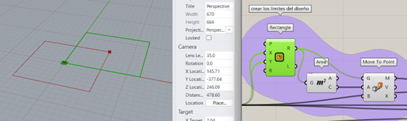
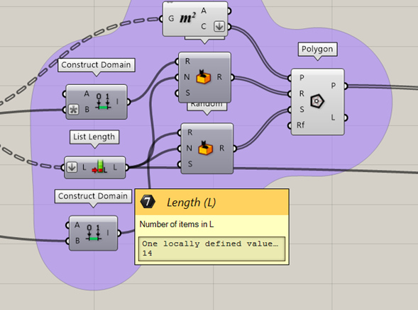

My Blog
Grasshopper 103
05/07/2024
Diseño parametrico
Superficies, Intersecciones y transformaciones.
Descargo de responsabilidad:
LAHV Design es un proyecto personal sin fines de lucro, todos los recursos(redactados y/o descargables) aquí compartidos son libres de uso, sin embargo no me hago responsable de ninguna manera de las decisiones que terceros tomen con dicho recuso.
En este articulo veremos algunas operaciones para manipular superficies rotarlas e iré explicando cada sección del algoritmo para hacerlo un poco más sencillo.
Es esta primera sección tenemos dos partes básicamente del lado izquierdo hay 2 sliders que manipularan todo el algoritmo, estos definen los limites en X,Y, Z y la cantidad de elementos en los que dividiremos la “vasija” respectivamente.
En estos primeros 3 componentes creo un rectángulo en el origen de rhino y luego extraigo con el componente área el centro de la figura para usarlo como punto de origen para una transformación “move to point” donde el punto de destino es el mismo origen de rhino 0,0,0 que son los valores que le asigne a la entrada B.
Después la salida del movimiento la conecte con un simple box rectangle para asignar el valor de la altura en Z y como esto es solo una caja para delimitar las dimensiones de nuestro diseño use al valor de X y Y del rectángulo para que fuera Z también. Una vez con la caja hice una operación de contours (que funciona de manera muy similar al comando de rhino) el cual me crea curvas en un objeto seleccionado a lo largo de un eje (en este caso el ejeZ) usando una distancia de separación, sin embargo a mi lo que me importaba controlar en este algoritmo es la cantidad de planos y no la distancia entre ellos defini que usaría una operación matemática de división para dividir el numero del slider de “limites XYZ” sobre “cantidad de contours” para definir la distancia entre los contours, así mi numero resultante en este caso no me importa tanto como el slider de control.
pasamos a la segunda sección del código donde ocuparemos la salida generada en la primera sección para alimentar varias entradas de la segunda en este caso en la primera parte tenemos el comando área nuevamente para indicarnos el centro de cada rectángulo generado en el contour.
Y estos puntos alimentaran la entrada de un bloque de “polygon” para indicar que quiero crear un polígono con cada uno de esos puntos.

Pero por defecto el primer punto tendrá los mismos valores de radio y lados (R y S respectivamente) que el ultimo punto. Para hacerlo un poco mas interesante los lados y radios de cada polígono se determinarán aleatoriamente.
Por eso coloque un componente llamado random en cada entrada, estos bloques de “azar” necesitan 3 valores un rango (también llamado dominio) de valores donde generar los números, y la cantidad de valores a generar. Como debo generar un rango con valores definidos por mi mismo algoritmo ocupare el componente llamado construir dominio (de otra forma podría haber utilizado un panel).
El dominio construido para el radio debía tener un valor mínimo de radio aceptable para mi modelo final entonces arbitrariamente coloque un valor que me diera un buen resultado.

Así mismo quería que para el valor máximo fuera en función de mis limites de XYZ por lo que use ese valor pero lo dividi por la mitad para que nunca se saliera de los limites.
para la parte de la cantidad de numero aleatorios decidí usar la cantidad de contours generados en la sección anterior. Si el cambio en un parámetro afecta a todo el algoritmo y este no se “rompe” por inconsistencia entre mis valores.
Para el segundo generador aleatorio fue un poco mas arbitrario el proceso, el valor mínimo del dominio e 3 porque el polígono mas simple que se puede generar tiene 3 lados y el valor 13 lo saque arbitrariamente de la cantidad de contours de la sección anterior para alimentar la cantidad de números aleatorios es la cantidad de contours del slider de la primera sección solo para mantener coherencia en el algoritmo y evitar que se rompa(también lo pude haber sacado del componente list length y añadirle una expresión x-1).
Para la tercera sección del algoritmo intenté darle un poco más de aleatoriedad añadiendo una transformación de rotación en ángulos aleatorios entre -180 a 180 grados entonces volví a conectar un construir dominio a el rango de un componente de “random” y la cantidad de números aleatorios volvió a salir de la cantidad de contours. Entonces para cada polígono hay una rotación asignada.
por último, de la pestaña de superficies saque un componente llamado loft que es lo mismo que el componente de rhino. Me crea una superficie a partir de una serie de superficies.
Hemos llegado al final de este artículo, como siempre espero que este recurso te haya sido de ayuda. Te recuerdo que te dejo en un archivo comprimido el archivo de rhino .3dm y el archivo de grashopper .gh para que puedas ver mejor lo que vimos en este artículo.
descarga los documentos de este articulo desde aqui.© Your Site Name. All Rights Reserved. Designed by HTML Codex